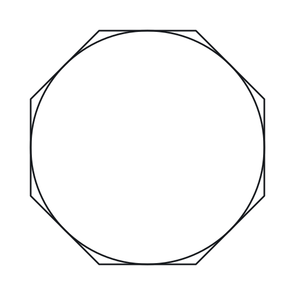

Polygons — Practice Set
Bank code: GEO-POL · Section: Geometry · 30 questions — Easy 7 · Medium 15 · Hard 8
Interior angles sum to (n - 2)*180 while the exterior angles always total 360, whatever n is; diagonals come from n(n - 3)/2.
Every question below is live in the question bank under the ID shown — the sheet and the portal are the same questions. Attempt a level with the clock running, then check Part C.
Part A — Questions
Quantitative Comparison — the four choices are always the same, so they are not reprinted: (A) Quantity A is greater · (B) Quantity B is greater · (C) The two quantities are equal · (D) The relationship cannot be determined from the information given
Level 1 · Easy — 7 questions · ~5 min
warm-up — these must be automatic
Q1 · GEO-POL-001 · MCQ · 40s
What is the sum of the interior angles of a hexagon?
(A) 540°
(B) 630°
(C) 720°
(D) 900°
(E) 1080°
Q2 · GEO-POL-002 · MCQ · 45s
Each interior angle of a regular pentagon measures how many degrees?
(A) 100°
(B) 108°
(C) 112°
(D) 120°
(E) 135°
Q3 · GEO-POL-003 · MCQ · 35s
What is the sum of the exterior angles of any convex polygon?
(A) 180°
(B) 270°
(C) 360°
(D) 540°
(E) 720°
Q4 · GEO-POL-004 · Numeric Entry · 50s
How many diagonals does a pentagon have?
Numeric entry — write the number.
Q5 · GEO-POL-005 · MCQ · 40s
Each exterior angle of a regular octagon measures how many degrees?
(A) 30°
(B) 40°
(C) 45°
(D) 60°
(E) 135°
Q6 · GEO-POL-007 · MCQ · 55s
The interior angle of a regular polygon measures 120°. How many sides does the polygon have?
(A) 4
(B) 5
(C) 6
(D) 8
(E) 10
Q7 · GEO-POL-010 · Numeric Entry · 40s
What is the sum of the interior angles of a decagon (10-sided polygon)?
Numeric entry — write the number.
Level 2 · Medium — 15 questions · ~20 min
two or three steps, one planted trap each
Q8 · GEO-POL-012 · QC · 70s
Quantity A: Each interior angle of a regular octagon Quantity B: Each interior angle of a regular nonagon
Q9 · GEO-POL-013 · MCQ · 65s
How many diagonals does an octagon have?
(A) 16
(B) 20
(C) 24
(D) 28
(E) 32
Q10 · GEO-POL-015 · Numeric Entry · 80s
A regular polygon has 35 diagonals. How many sides does it have?
Numeric entry — write the number.
Q11 · GEO-POL-016 · Select all that apply · 90s
Which of the following could be the measure of each interior angle of a regular polygon? Select all that apply.
(A) 108°
(B) 130°
(C) 150°
(D) 155°
(E) 170°
Q12 · GEO-POL-018 · QC · 85s
A regular polygon P has interior angles of 135°.
Quantity A: Number of diagonals of P Quantity B: Number of sides of P squared
Q13 · GEO-POL-020 · Numeric Entry · 75s
A floor is tiled with regular hexagonal tiles, each with side length 4 centimeters. The area of one tile is k√3 square centimeters. What is the value of k?
Numeric entry — write the number.
Q14 · GEO-POL-021 · QC · 70s
Quantity A: Sum of interior angles of a heptagon Quantity B: Sum of exterior angles of a heptagon × 3
Q15 · GEO-POL-022 · Select all that apply · 85s
A convex polygon has n sides. Which of the following statements must be true? Select all that apply.
(A) The sum of its exterior angles is 360°
(B) The sum of its interior angles is n × 180°
(C) Each interior angle measures less than 180°
(D) Each exterior angle of the polygon equals 360°/n
(E) The polygon has n(n-3)/2 diagonals
Q16 · GEO-POL-024 · Numeric Entry · 75s
A regular hexagon has a perimeter of 48. Its area is k√3. What is the value of k?
Numeric entry — write the number.
Q17 · GEO-POL-026 · QC · 80s
A regular polygon Q has 20 sides.
Quantity A: Sum of all interior angles of Q (in degrees) Quantity B: 10 times the sum of all exterior angles of Q
Q18 · GEO-POL-027 · MCQ · 85s
The ratio of an interior angle to its corresponding exterior angle in a regular polygon is 4:1. How many sides does the polygon have?
(A) 8
(B) 9
(C) 10
(D) 12
(E) 15
Q19 · GEO-POL-032 · Numeric Entry · 90s
The sum of the interior angles of a polygon exceeds the sum of its exterior angles by 1080°. How many sides does the polygon have?
Numeric entry — write the number.
Q20 · GEO-POL-KMF-005 · MCQ · 70s
The interior angle measures of convex polygon X add up to 540 degrees more than those of convex polygon Y. Polygon X has 12 sides. How many sides does polygon Y have?
(A) 3
(B) 6
(C) 9
(D) 10
(E) 15
Q21 · GEO-POL-KMF-006 · MCQ · 90s
For how many integers n >= 3 are the interior angles of a regular n-gon each between 135 and 150 degrees, with both of those values allowed?
(A) 3
(B) 4
(C) 5
(D) 6
(E) 12
Q22 · SEC-PG-029 · QC · 85s
A hexagon has six interior angles. Five of those angles each measure 128 degrees.
Quantity A: The measure, in degrees, of the sixth interior angle Quantity B: 128
Level 3 · Hard — 8 questions · ~14 min
where 162+ is won or lost
Q23 · GEO-POL-028 · Numeric Entry · 95s
A polygon has twice as many diagonals as it has sides. How many sides does it have?
Numeric entry — write the number.
Q24 · GEO-POL-030 · Select all that apply · 110s
A polygon has n sides where n is a positive integer greater than 2. Which of the following are possible values for the number of diagonals of such a polygon? Select all that apply.
(A) 0
(B) 2
(C) 4
(D) 9
(E) 21
Q25 · GEO-POL-033 · QC · 100s
Polygon P is a regular polygon. Its interior angle sum equals 5 times its exterior angle sum.
Quantity A: Number of diagonals of P Quantity B: 5 times the number of sides of P
Q26 · GEO-POL-037 · Numeric Entry · 120s
A convex polygon has n sides. Its number of diagonals is 52 greater than its number of sides. What is n?
Numeric entry — write the number.
Q27 · GEO-POL-038 · MCQ · 95s
The measures, in degrees, of the six interior angles of a certain hexagon are six consecutive odd integers. What is the measure, in degrees, of the greatest of the six angles?
(A) 120
(B) 121
(C) 123
(D) 125
(E) 130
Q28 · GEO-POL-KMF2-001 · Select all that apply · 100s
Each interior angle of a regular polygon with n sides has degree measure between 140 and 160. Which of the following could be the value of n?
Indicate all such integers.
(A) 8
(B) 9
(C) 12
(D) 17
(E) 18
Q29 · GEO-POL-KMF2-009 · MCQ · 105s
The figure above shows a circle inscribed in a regular octagon. If the diameter of the circle is 4 + 4sqrt(2), what is the perimeter of the octagon?

(A) 16
(B) 24
(C) 32
(D) 16 + 16sqrt(2)
(E) 32 + 32sqrt(2)
Q30 · SEC-PG-006 · QC · 100s
Polygon J has k sides, where k is greater than 4. Polygon K has k + 3 sides.
Quantity A: The sum of the measures of the interior angles of polygon K, in degrees Quantity B: The sum of the measures of the interior angles of polygon J, in degrees, plus 480
The rest of this sheet is part of Pro
All 30 questions, the answer key and full worked solutions with every trap named — plus 75 concept notes and 9,629 questions.